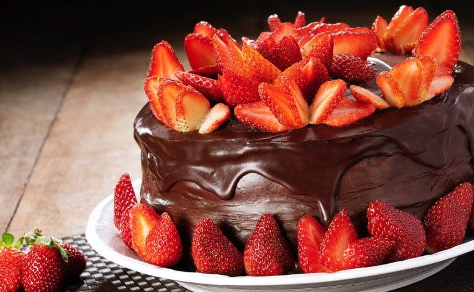

O projeto é uma página se quando se trata de uma sobremesa clássica e deliciosa, poucas opções são
tão tentadoras quanto um bom bolo de chocolate. Esta receita simples e fácil de preparar é a solução perfeita para
satisfazer aquele desejo por um doce delicioso e prazeroso. Combinando ingredientes básicos, como ovos, açúcar,
farinha de trigo e um toque generoso de chocolate em pó, este bolo derrete na boca a cada mordida. A adição estratégica
de água quente e fermento em pó confere a textura ideal para esse bolo, garantindo maciez e um sabor que agrada a todos.
O segredo, no entanto, está na cobertura deliciosa que coroa essa iguaria. Uma mistura cuidadosa de leite, chocolate em pó,
manteiga e açúcar é aquecida até atingir o ponto de fervura, resultando em uma cobertura cremosa e irresistível. Ao ser derramada
sobre o bolo ainda quente, essa cobertura se funde perfeitamente à massa, proporcionando uma experiência de sabor inesquecível.
Este bolo é uma excelente opção para encontros familiares, momentos de celebração ou simplesmente para um momento de prazer pessoal.
Siga os passos simples deste modo de preparo para criar um bolo que encantará os paladares e aquecerá os corações de todos à mesa
